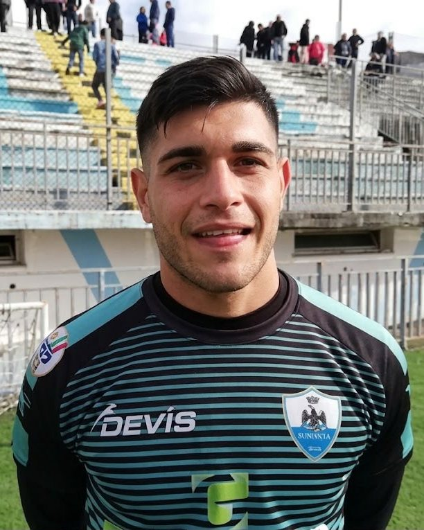

Chi ti accompagnerà
Prima di accompagnare un portiere, sono stato uno di loro.
Gabriele De Pietto
Consulente in Mindset e Human Performance
Ho vissuto il ruolo del portiere dall'infanzia fino ai 25 anni, attraversando squadre, categorie e realtà sportive differenti.
In campo ho conosciuto la responsabilità delle decisioni, il peso degli errori, la comunicazione con i compagni e quella dimensione mentale che spesso continua a vivere anche dopo il fischio finale.
Per molto tempo ho percepito una distanza tra il portiere che ero in campo e la persona che ero fuori. Proprio questa esperienza mi ha spinto a interrogarmi su ciò che esiste oltre la prestazione.
Da lì è nato il mio percorso di studio: dalle Scienze Motorie e dalla performance fisica, fino all'approfondimento del mindset, della comunicazione e del coaching.
Oggi porto questa storia e queste competenze in FlyNoThink, per offrire ai portieri uno spazio personale di ascolto, comprensione e orientamento.
Formazione
Laureato in Scienze Motorie e chinesiologo, con formazione specialistica nel fitness, nella postura, nella performance sportiva e nella comunicazione.
In corso Attualmente prosegue la formazione attraverso i Master in Mindset Biohacking e Mindset Coaching.
Il suo ruolo
Referente iniziale del percorso FNT: conduce i tre incontri e accompagna la costruzione della Mappa e del documento.